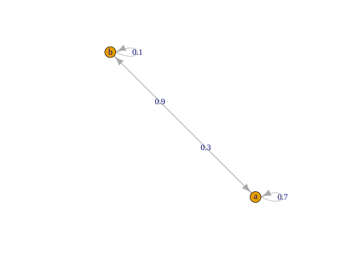
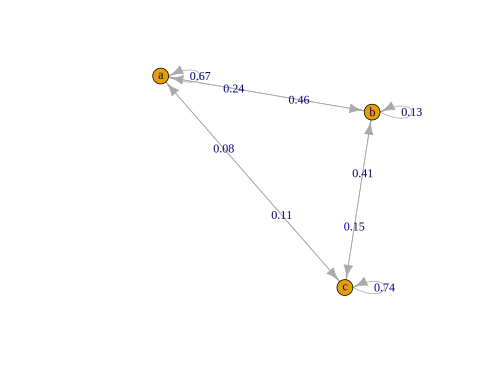

Markov Chain Model
Initial demo of markovchain package. Not shown. You may want to play with it to get a feel for how it works. We will use it for comparison later. Do go ahead and load the package
library(markovchain)
A = matrix(c(.7, .3, .9, .1), nrow = 2, byrow = TRUE)
dtmcA = new(
'markovchain',
transitionMatrix = A,
states = c('a', 'b'),
name = 'MarkovChain A'
)
dtmcAMarkovChain A
A 2 - dimensional discrete Markov Chain defined by the following states:
a, b
The transition matrix (by rows) is defined as follows:
a b
a 0.7 0.3
b 0.9 0.1
[1] 0.1initialState = c(0, 1)
steps = 4
finalState = initialState * dtmcA ^ steps #using power operator
finalState a b
[1,] 0.7488 0.2512 a b
[1,] 0.75 0.25observed_states = sample(c('a', 'b'), 50, c(.7, .3), replace = TRUE)
createSequenceMatrix(observed_states) a b
a 24 11
b 11 3$estimate
MLE Fit
A 2 - dimensional discrete Markov Chain defined by the following states:
a, b
The transition matrix (by rows) is defined as follows:
a b
a 0.6857143 0.3142857
b 0.7857143 0.2142857
$standardError
a b
a 0.1399708 0.09476071
b 0.2369018 0.12371791
$confidenceLevel
[1] 0.95
$lowerEndpointMatrix
a b
a 0.4113764 0.1285581
b 0.3213953 0.0000000
$upperEndpointMatrix
a b
a 0.9600522 0.5000133
b 1.0000000 0.4567684
$logLikelihood
[1] -29.06116Data Setup
Data Functions
A recursive function to take a matrix power.
A function to create a sequence.
createSequence = function(states, len, tmat) {
# states: number of states
# len: length of sequence
# tmat: the transition matrix
states_numeric = length(unique(states))
out = numeric(len)
out[1] = sample(states_numeric, 1, prob=colMeans(tmat)) # initial state
for (i in 2:len){
out[i] = sample(states_numeric, 1, prob = tmat[out[i - 1], ])
}
states[out]
} [,1] [,2]
[1,] 8 8
[2,] 8 8 [,1] [,2]
[1,] 0.5714311 0.4285689
[2,] 0.5714252 0.4285748Two states Demo
Note that a notably long sequence is needed to get close to recovering the true transition matrix.
A = matrix(c(.7, .3, .9, .1), nrow = 2, byrow = TRUE)
observed_states = createSequence(c('a', 'b'), 5000, tmat = A)
createSequenceMatrix(observed_states) a b
a 2637 1124
b 1124 114 a b
a 0.7011433 0.29885669
b 0.9079160 0.09208401$estimate
MLE Fit
A 2 - dimensional discrete Markov Chain defined by the following states:
a, b
The transition matrix (by rows) is defined as follows:
a b
a 0.7011433 0.29885669
b 0.9079160 0.09208401
$standardError
a b
a 0.01365374 0.008914148
b 0.02708086 0.008624457
$confidenceLevel
[1] 0.95
$lowerEndpointMatrix
a b
a 0.6743825 0.28138528
b 0.8548385 0.07518038
$upperEndpointMatrix
a b
a 0.7279042 0.3163281
b 0.9609935 0.1089876
$logLikelihood
[1] -2674.284res = markovchainFit(observed_states)
# log likelihood
sum(createSequenceMatrix(observed_states) * log(res$estimate@transitionMatrix))[1] -2674.284Three states demo
A = matrix(
c(.70, .20, .10,
.20, .40, .40,
.05, .05, .90),
nrow = 3,
byrow = TRUE
)
observed_states = createSequence(c('a', 'b', 'c'), 500, tmat = A)
createSequenceMatrix(observed_states) a b c
a 77 27 12
b 20 28 22
c 18 15 280 a b c
a 0.66379310 0.23275862 0.1034483
b 0.28571429 0.40000000 0.3142857
c 0.05750799 0.04792332 0.8945687$estimate
MLE Fit
A 3 - dimensional discrete Markov Chain defined by the following states:
a, b, c
The transition matrix (by rows) is defined as follows:
a b c
a 0.66379310 0.23275862 0.1034483
b 0.28571429 0.40000000 0.3142857
c 0.05750799 0.04792332 0.8945687
$standardError
a b c
a 0.07564624 0.04479442 0.02986294
b 0.06388766 0.07559289 0.06700594
c 0.01355476 0.01237375 0.05346070
$confidenceLevel
[1] 0.95
$lowerEndpointMatrix
a b c
a 0.51552916 0.14496316 0.04491797
b 0.16049675 0.25184062 0.18295646
c 0.03094114 0.02367122 0.78978761
$upperEndpointMatrix
a b c
a 0.81205705 0.32055408 0.1619786
b 0.41093182 0.54815938 0.4456150
c 0.08407484 0.07217543 0.9993498
$logLikelihood
[1] -302.4854Function
Now we create a function to calculate the (negative) log likelihood.
markov_ll = function(par, x) {
# par should be the c(A) of transition probabilities A
nstates = length(unique(x))
# create transition matrix
par = matrix(par, ncol=nstates)
par = t(apply(par, 1, function(x) x/sum(x)))
# create seq matrix
seqMat = table(x[-length(x)], x[-1])
# calculate log likelihood
ll = sum(seqMat * log(par))
-ll
}Estimation
Note that initial state values will be transformed to rowsum to one, so the specific initial values don’t matter (i.e. they don’t have to be probabilities). With the basic optim approach, sometimes log(0) will occur and produce a warning. Can be ignored, or use LFBGS as demonstrated at the end.
Comparison
Compare with markovchain package.
compare_result = markovchainFit(observed_states)
# compare log likelihood
c(-result$value, compare_result$logLikelihood)[1] -844.459 -844.459# compare estimated transition matrix
list(
`Estimated via optim` = estmat,
`markovchain Package` = compare_result$estimate@transitionMatrix,
`Analytical Solution` = prop.table(
table(observed_states[-length(observed_states)], observed_states[-1])
, 1)
) %>%
map(round, 3)$`Estimated via optim`
[,1] [,2] [,3]
[1,] 0.698 0.191 0.111
[2,] 0.369 0.235 0.396
[3,] 0.113 0.162 0.725
$`markovchain Package`
a b c
a 0.698 0.191 0.111
b 0.369 0.235 0.396
c 0.113 0.162 0.725
$`Analytical Solution`
a b c
a 0.698 0.191 0.111
b 0.369 0.235 0.396
c 0.113 0.162 0.725Visualize.
plot(
new(
'markovchain',
transitionMatrix = estmat,
states = c('a', 'b', 'c'),
name = 'Estimated Markov Chain'
)
)
If you don’t want warnings due to zeros use constraints (?constrOptim).
Source
Source code found at https://github.com/m-clark/Miscellaneous-R-Code/blob/master/ModelFitting/markov_model.R